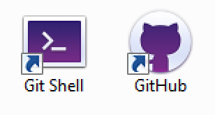

Set up notes for the Introduction to GitHub workshop
So that everything is ready to go please do to these 2 things before coming along to the workshop.
Head over to the GitHub web site and create yourself an account if you don't already have one.
Note: You won't need a paid subscription for the workshop so in Step 2 of the signup just pick the Unlimited public repositories for free plan and then use the link to skip Step 3.
Download and install the GitHub Desktop app.
Download and then run GitHubSetup.exe
Note: you may be asked to restart your computer part way through, but the set up process should continue automatically after the computer restarts.
Once completed you should end up with 2 new icons on your desktop:
Download the latest version for Mac and then: